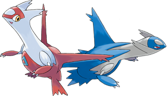
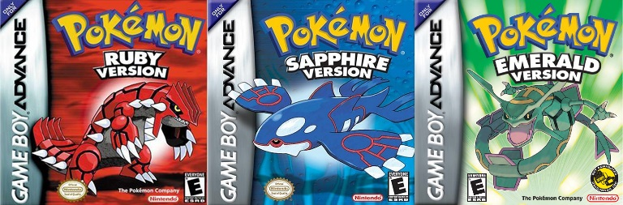

In 2001 and 2002, many clues appeared hinting towards the upcoming release of the third generation of pokemon. In the movie “Pokemon Heroes”, two unknown pokemon now known as “Latios and Latias” appeared, reassuring fans everywhere of the third generation of pokemon. Finally, after long anticipation, Generation 3 was debuted on March 19th, 2003 (November 21st, 2002 in Japan). The anime also began a new series called “Advanced Generation Series”. It started in Japan on Nov. 21st, 2002, the same day the games were released. It featured a brand new main character named “May”. Two new movies were also made called “Jirachi: Wish Maker” and “Destiny Deoxys”.
Pokemon Ruby and Pokemon Sapphire were released on November 21st, 2002, in Japan, and March 19th, 2003 in North America, and featured the legendary Pokemon Kyogre, and Groudon,. Each exclusive to their respective games, and with possession of both pokemon, a third legendary pokemon "Rayquaza", is unlocked. On May 1st 2005, Pokemon Emerald was released, which was a revised version of Pokemon Ruby and Sapphire. They all take place in the “Hoenn Region” and featured 135 new pokemon. On September 9th, 2004, both Pokemon FireRed and Pokemon LeafGreen were released in North America. They were re-makes of the generation 1 games, Pokemon Red and Pokemon Green, and included many new features like a new area of the Kanto Region called “Sevii Islands”, where pokemon from generation 2 could be caught.
